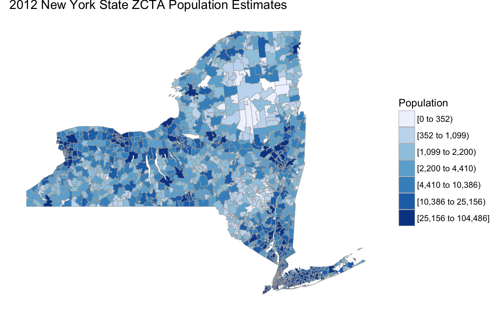
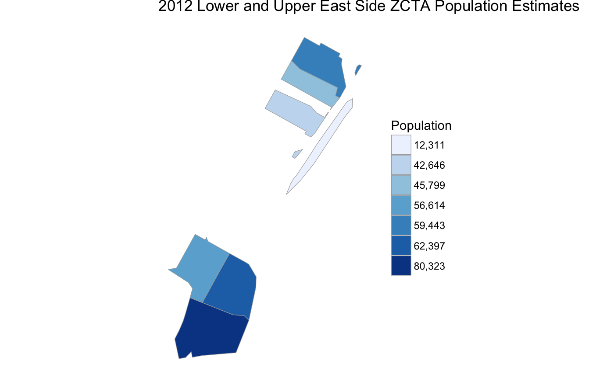
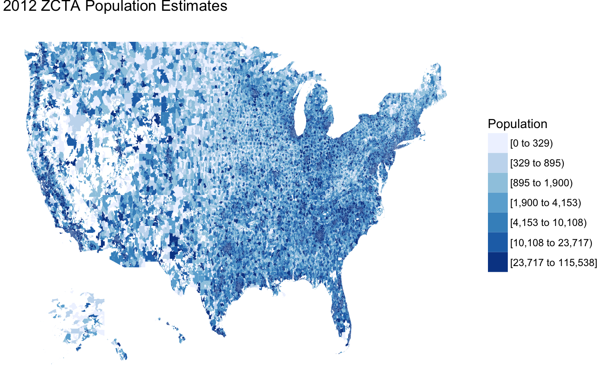
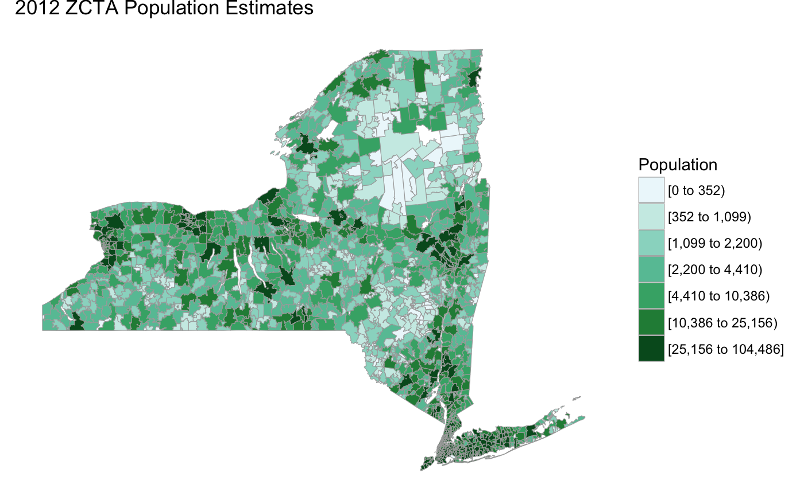

Creating ZIP Code Choropleths with choroplethrZip
Ari Lamstein
April 16, 2015
Source:../site-documentation/vignettes/a-zip-choropleth.Rmd
a-zip-choropleth.RmdYou can create a choropleth of US ZIP codes with the function zip_choropleth. Note that what is rendered are actually US Zip Code Tabulated Areas (ZCTAs) from the US Census Bureau, not US Postal Service ZIP codes. This page from the Census Bureau explains the differences. See also ?zip.map for more details.
Note that because of its size (~60MB) the choroplethrZip package is not hosted on CRAN. Rather, it is hosted on github here. You can install the package by following the installation instructions on that page.
Data Requirements
The data.frame that you provide to zip_choropleth must have one column named “region” and one column named “value”. Your entries for “region” must exactly match how regions are named in the map which choroplethr uses. These names are defined in the object zip.regions along with some useful metadata:
library(choroplethrZip)
?zip.regions
data(zip.regions)
head(zip.regions)## region state.name county.name county.fips.numeric cbsa cbsa.title
## 1 70560 louisiana iberia 22045 10020 <NA>
## 2 70510 louisiana vermilion 22113 10020 <NA>
## 3 70592 louisiana lafayette 22055 10020 <NA>
## 4 70548 louisiana vermilion 22113 10020 <NA>
## 5 70560 louisiana vermilion 22113 10020 <NA>
## 6 70578 louisiana lafayette 22055 10020 <NA>
## metropolitan.micropolitan.statistical.area
## 1 <NA>
## 2 <NA>
## 3 <NA>
## 4 <NA>
## 5 <NA>
## 6 <NA>In order to use choroplethr, you must use the naming convention in the “region” column of zip.regions. That is, you must use the string version of the ZIP code - i.e. you must include any leading zeroes.
Exploring Data
Like all choroplethr functions, zip_choropleth allows you to specify the scale with the num_colors parameter. What makes zip_choropleth unique is the number of zoom options. In addition to viewing all ZIPs in the country you can select ZIPs by State, County, Metropolitan Statistical Area (MSA) as well as manually specify a number of ZIPs.
All ZCTAs in a State
Here is an example of viewing all ZCTAs in a State by using the state_zoom parameter:
library(choroplethr)
library(choroplethrZip)
?df_pop_zip
data(df_pop_zip)
?zip_choropleth
zip_choropleth(df_pop_zip,
state_zoom="new york",
title="2012 New York State ZCTA Population Estimates",
legend="Population")
All ZCTAs in Selected Counties
Here is an example of using the county_zoom parameter to zoom in on the five Counties of New York City:
# New York City is comprised of 5 counties: Bronx, Kings (Brooklyn), New York (Manhattan),
# Queens, Richmond (Staten Island). Their numeric FIPS codes are:
nyc_fips = c(36005, 36047, 36061, 36081, 36085)
zip_choropleth(df_pop_zip,
county_zoom=nyc_fips,
title="2012 New York City ZCTA Population Estimates",
legend="Population")
Manually Selecting ZCTAs
Here is an example of using the zip_zoom parameter to manually select all ZCTAs in two neighborhoods in Manhattan:
manhattan_les = c("10002", "10003", "10009")
manhattan_ues = c("10021", "10028", "10044", "10128")
zip_choropleth(df_pop_zip,
zip_zoom=c(manhattan_les, manhattan_ues),
title="2012 Lower and Upper East Side ZCTA Population Estimates",
legend="Population")
All ZCTAs in a Metropolitan Statistical Area (MSA)
Here is an example of using the msa_zoom parameter to zoom in on the entire New York Metropolitan Statistical Area (MSA):
zip_choropleth(df_pop_zip,
msa_zoom="New York-Newark-Jersey City, NY-NJ-PA",
title="2012 NY-Newark-Jersey City MSA\nZCTA Population Estimates",
legend="Population")
All ZCTAs in the USA
Here is an example of viewing all ZCTAs in the country. While interesting to look at, this map has two problems: 1) it takes a few minutes to render and b) due to the large number (32,989) and irregular shape of ZCTAs, it can sometimes be hard to read. I have found that experimenting with the number of colors can be especially useful for this map.

Advanced Options
Any customization outside the optional parameters presented above will require you to create a ZipChoropleth object. choroplethr uses R6 to take advantage of object-oriented programming. Here is an example of using the ggplot2_scale on the base Choropleth object to customize the palette used.
library(ggplot2)
choro = ZipChoropleth$new(df_pop_zip)
choro$title = "2012 ZCTA Population Estimates"
choro$ggplot_scale = scale_fill_brewer(name="Population", palette=2, drop=FALSE)
choro$set_zoom_zip(state_zoom="new york", county_zoom=NULL, msa_zoom=NULL, zip_zoom=NULL)
choro$render()